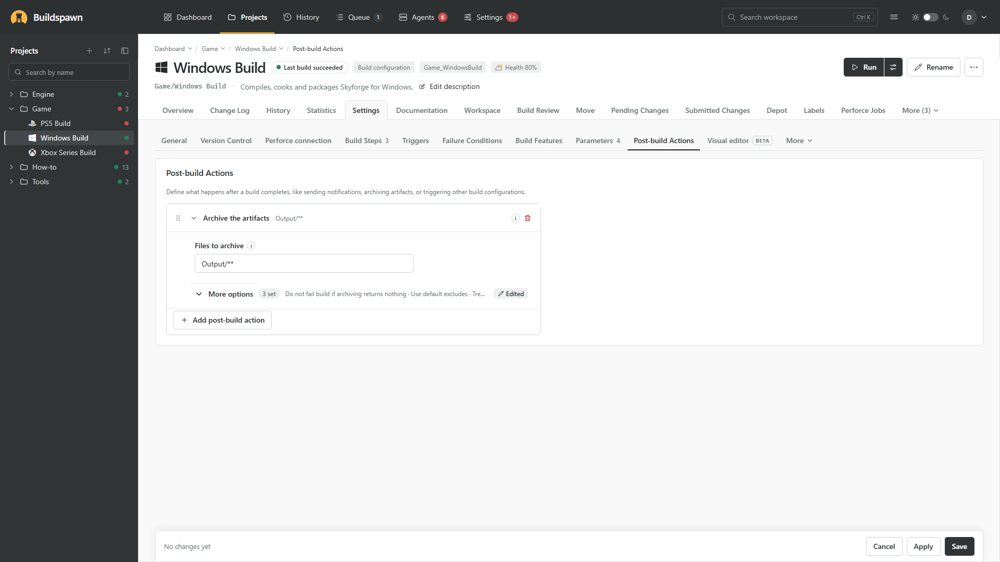

Post-build Actions
What happens after a build completes: keep files, report tests, send mail, start other builds.
When to use it
Use it for work that comes after the last step. Post-build actions run in the order of the list. Each one is a card that folds. See After the build for a page on each action.

How to set it up
- Open the build configuration and click Settings. Then click Post-build Actions.
- Click Add post-build action and choose one from the picker. Use the search box to filter.
- Fill in the card. More options shows how many options are set.
- Drag the handle to change the order. The bin removes an action.
- Click Save.
Every field
The picker offers these actions.
| Field | What it does | Default | Example |
|---|---|---|---|
| Archive the artifacts | Keeps files with the build. | - | Page |
| Publish JUnit test result report | Shows test results. | - | Page |
| Aggregate downstream test results | Sums the tests of following builds. | - | Page |
| Build other build configurations | Starts other builds. | - | Page |
| Record fingerprints of files to track usage | Tracks where files are used. | - | Page |
| E-mail Notification | Mails people. | - | Page |
| Git Publisher | Pushes tags and branches. | - | Page |
| Perforce actions | Label, publish, clean up, approve a review. | - | Pages |
| Send build artifacts over SSH, FTP or to a Windows share | Copies files to a server. | - | Pages |
| Deploy war/ear to a container | Deploys a web application. | - | Page |
| UGS metadata server badge | Sets a badge in Unreal Game Sync. | - | Page |
A worked example
Windows Build archives Output/**, mails the release team, and starts Unit Tests.
What you see when it runs
The end of the console log lists what each action did. A failed action can make the build unstable or failed, as its page says.
Problems and fixes
| Problem | What to do |
|---|---|
| An action is missing from the picker | The build configuration type does not support it. A Pipeline uses steps in its script. |
| An action shows as inherited | A project or template passes it down. Override or disable it here. |